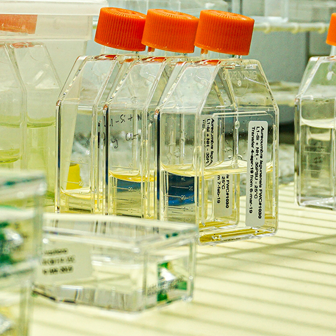

> 전자소재 > 박막재료
박막재료
- 
-
CVD/ALD 기술은 나노미터 단위의 박막을 형성하거나 깊고 좁은 hole을 균일하게 채워 넣어야 하는 반도체 공정에서 매우 중요한 부분을 차지하며, FPD, LED, PV 등 여러 전자 산업에 주요 공정으로 응용분야가 확대되어 가고 있습니다.
CVD/ALD 공정은 전구체(precursor) 물질을 기화시킨 뒤 화학반응을 발생시켜 금속막, 산화금속막, 질화금속막 등의 원하는 물질을 선택적으로 형성하는 방법입니다.
한솔케미칼은 CVD/ALD에 사용되는 다양한 실리콘 및 금속 전구체를 생산하고 있습니다.
제품용도 및 특성
| 제품명 | 화학명 | 용도 |
|---|---|---|
| TSA | Trisilylamine | SiO2 Gap fill |
| BDEAS | Bisdiethylaminosilane | Low temp SiO2, Si seeding |
| DIPAS | Diisopropylaminosilane | Low temp SiO2, Si seeding |
| HCDS | Hexachlorodisilane | Spacer |
| CpCo(CO)2 | Cyclopentadienyldicarbonylcobalt | Co capping layer |
| High-k | Zirconium, Hafnium, Titanium, Aluminiumprecursors | High-k |
| 3DMAS | Trisdimethylaminosilane | Slit SiO2, Tunneling SiO2 |
| WCl5 | TungstenPentachloride | Solid W precursor for seeding |
| Ruthenium | Ex0XRuSeries | Liquid Ru precursor for ALD process |
| BTBAS | Bistertiarybutylaminosilane | Middle temp SiO2 |
담당자 연락처
| 분야 | 담당자 | 직급 | TEL | |
|---|---|---|---|---|
| 전자재료 | 장진혁 | 팀장 | 02-2152-2374 | jhjang@hansol.com |
| Q.D | 김준헌 | 차장 | 02-2152-2373 | jhkim3@hansol.com |
| 2차전지 | 김흥순 | 과장 | 02-2152-2377 | hskim5@hansol.com |
| 기능성레진 | 심정보 | 주임 | 02-2152-2371 | jbsim@hansol.com |